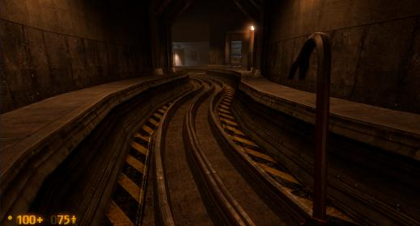
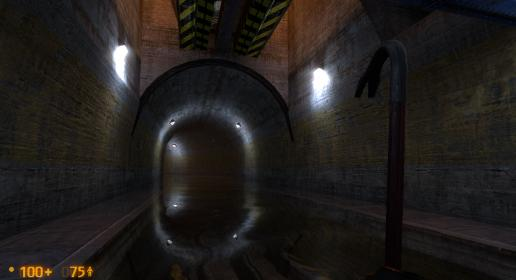
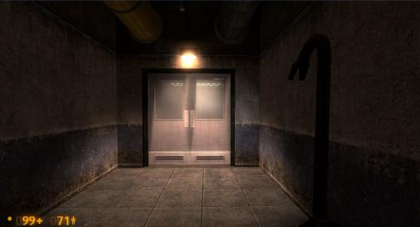
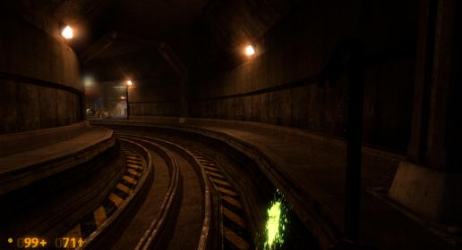
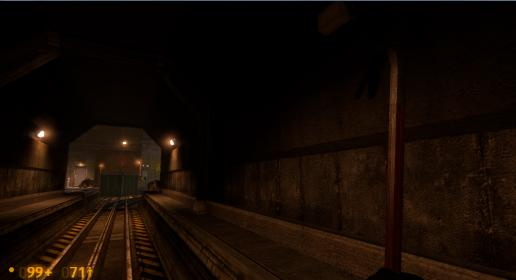

Hey guys, come on. No need to be mean to one another.
In terms of work done, even though I’m working this week, and it’s been exhausting, I still got a fair amount done! I’ve really been focussed on expanding parts of A1 and A2 vertically, where they can spare it. Though A2 is absolutely at the entity limit, it’s quite far from the brush limit, so I can afford to do it. The lift area on A2 has been dramatically expanded vertically and looks a tonne better now, it should now be a distinctive and unique area now. Very excited to show it off once I get around to the beta release, which I’m guessing will be late next week.
As per usual, Targ says it all.
Really delighted to hear you’re doing this. Might help the crashing! It’s also great that I won’t have to do much/anything. Less work is always nice.
Also glad to hear the team’s considering a rebalancing, there are some areas of the game which could really use it. I might post a thread in The Cafeteria a bit later on with some of my thoughts on how some aspects could potentially be better balanced.
If that’s the case, any chances of a decorative tunnel maybe… near the end of the map? It could be nothing more than a short hall immediately ending in a blast door (like the one seen right at the start of B1). It would at least help the tunnel system look even bigger than it does now.
Absolutely. There’ll probably be 2 or 3 new decorative elements.
I consider reducing health to be just a poor substitute for actually balancing a fight PROPERLY. The only time I’ve ever done that is in the Guards vs Marines fight where the Guards absolutely 100% have to lose. I’d rather balance my fights properly! A lot of effort, but worth it.
This has been discussed absolutely to death. I’m removing the wave of Vorts which spawns during the Marine ambush after pressing the security button, and that’s it as far as the battle removals go.
If I can find away to fix the Vort’s AI being fucked in the cross-rail battles (50 Cal and endtrack) then I can dramatically reduce their numbers in those two encounters, most notably the last one. I’m confident my fix will work but I haven’t tested it yet. I can’t be blamed for that one, as it’s an AI bug, through and through.
As for their being too many Vorts in most fights, again you can blame the BM Devs for that one. There are no good solutions to this, either, aside from hoping they rebalance it in the future. 1 Marine can kill 3 - 4 Vorts before going down, whereas in HL1, 1 Marine was roughly worth 1.5 Vorts. So, either the fights have low numbers of Vorts, in which case it’s over in a flash and isn’t fun to watch, and the HECU win every time. Or, low numbers of Marines AND Vorts, in which case it’s over in a flash and isn’t fun to watch. Or high numbers of Vorts and low numbers of Marines, with generally balanced outcomes (with further testing) which is the current, best compromise. I will continue to refine the fights until reaching the best possible scenario.
I agree with using the health trick like he did with the guards. Actually I was never sure why he didn’t in the first place, other than the obvious fact that it’ll make the enemies easier on the player. Still a worthy trade imo rather than having a crapload of Vorts.
I also don’t believe that the Vorts have to win. Even if they inflicted 50% casualties on the HECU, that’s still a Pyrrhic victory*. The aliens reinforce by teleporting in and attack by throwing waves of themselves at the enemy and attacking from behind the lines (what lines?). The HECU on the other hand need to get around the old fashioned way.
*A Pyrrhic victory is a victory in which the victor has taken so many casualties that a similar battle will certainly lead to defeat. In this case, if the HECU win with 40% strength, that’s a Pyrrhic victory because a second wave will wipe them out.
All we need to show that they’re struggling is soldiers dying, not being obliterated. Leave the obliteration for ST, imo.
I realize this has been talked about to death, but not necessarily the number of vorts…
Never the less, if it gets out of hand I’ll let it go.
Someguy sumed up what I was thinking almost to the letter:
Further you also have some factors for reducing some of the grunts’ HP:
Nearby is the medical area, some of the injured soldiers would likely get up to help (at least those who’re still able to).
There’s no telling when the firefight between the two started or whether they ran into another group of aliens earlier on.
I was suggesting reducing the health of a few of them. Not the entire squad, and not to play it like the security personnel either (5 hp). Setting it to a range of say 25-40% of their maximum HP would be high enough on at least 3-4 of them out of the 6 there.
If you’re truly against it, mix up some of the enemy numbers with a few bullsquids or some such to distract the grunts for a few seconds.
If you don’t want to do that then you can cause the Vorts to become active well before the grunts do and allow them to inflict some damage before the grunts massacre them… prolly a worse option of the player happens to lay eyes on them in their “asleep” state.
Failing that, I don’t see other options with the exception of a revamp of the area itself to make it more vort friendly.
Wait, you actually did that? Well, if they is somehow possible, then maybe there should just be a trigger to kill the guards when the second-last soldier is killed, or something.
i thought this encounter was really over the top and the atmosphere was lost… I don’t think there is anything wrong with a battle here but the shear horde of npc’s made it feel more like left 4 dead…
I would really like the amount of enemies in this area drastically reduced…it actually irritated me… Not that it was difficult but it felt too busy… The houmdeye trap is good and caught me out so that is a keeper
actually it’s more a case of spreading the npc encounters out rather than all at once… I would say have more spawn once you throw the boom gate… Although i nearly decided to run on to the next level and disregard the tram entirely this was because the switch was too far from the boom gate and was not obvious to find.
edit changed my mind far too many enemies and that makes ir unrealistic. this also happens later on with huge numbers of vorts later on.
I am only referenceing the other side of the door… it is really good otherwise…
But this area did not work for me… Sorry that is my opinion…
I would also suggest that the open plan canteen be enclosed but with windows overlooking the track…it would make more sense. The layout is fine though.
So far as the Boom gate switches go the first 2 switches don’t make sense… I would like to suggest you go for a higher atrium in these switching areas and from the boom gate you can clearly see the security switching hut objective… Also if you are operating the gates from there you also need to see the gates so this would work on a number of levels. The last 2 boom gates however make perfect sense and work well.
Loved the Ambush was the best part of the map set… Perhaps take the number of enemies down a bit and no vorts here I think they looked out of place.
The open train yard area I felt lost in… and I know you are going to work on this… I think the warehouse before the train yard needs more cover in it too.
I have tried to play through the whole map set but can not reach the end as it keeps crashing… Overall it is very good though and there are many things that I really like about it so overall I think you have done a great job but It needs more work in some areas…
I don’t think though you need to fill up a map just because you still have brushes or entities left to use… Sometimes it is better to just say It does not need anymore stuff in it and leave it at that. That will also help performance and perhaps it won’t crash so much???
I never really felt that the HECU were losing in the OaR chapters of the original HL. They were fighting, some died some survived, but for the most part the soldiers still felt like a much larger threat.
Balancing the fights so that the soldiers almost always win is ok as long as the vorts take a couple HECU with them, plus there’s always the teleport gag where the HECU could finish off a group of vorts only to have more spawn around them.
Either way, even if the battles are balanced the same, I feel there are simply too many NPCs in A2’s office complex, especially towards the end.
Guys, can we PLEASE stop going around in circles? I’ve already stated, both after A2’s release, and a few pages ago that I’m reducing the NPC numbers - by quite a bit on A2. I have stated my reasons why their numbers were so high in the first place (Black Mesa’s default balancing and the AI bug), and I’ve said that I’m going to fix it. It doesn’t really need to be discussed further. Let’s move onto a more productive, and less irritating topic, please. I’ve heard what you have to say. I’m acting on it. It will be better in the next version.
Already have this planned. It’s pretty difficult to do, anyway, but is possible, through excessive use of MP5 grenades.
One topic I’d really like to talk about is how to better direct the player to the security switch on A2, without moving the switch. Its current location is perfect in terms of making the player need to explore the office complex and enjoy the full experience, but it isn’t intuitive and the player isn’t drawn to it immediately, especially if they disregard the (currently bad) signs.
Here’s what I’ve currently done to improve it:
Anything additional which can be layered on top of this would be much appreciated.
One other thing I’d like to talk about is a cool idea for an encounter on A1. I currently am very strapped for ideas on it. One of the new rooms is very bare and could use an extra encounter. I’m currently thinking of a HECU being chased by some headcrabs, but that’s about it. If anyone has some neat (no HUGE ideas, just a small encounter), ideas, that’d be awesome!
You don’t understand what I mean by expansion. The playable area on A2 remains 100% untouched in terms of size. What I have changed is that some areas have vertical areas above them making the rail system seem a lot bigger and more impressive than before. You’ll see what I mean when the beta comes around. Trust me, there’s no disadvantage to it. And all the areas I’ve expanded in this regard were simply tunnels before. The tunnels perform perfectly in OaRU, it’s the more unique areas which sometimes have problems. It also won’t affect crashing in the slightest.
Text, since you are revisiting A1 now and have some plans to do a little expanding, here are some areas that - in my opinion - you should take into consideration.
I would insert a small straightaway between this end of this curve (Picture 1) and the beginning of the next curve (that goes into the loop). Decorate it as necessary.
Consider adding some expansions to this tunnel here (Picture 2). The section at the very beginning of A would be a good reference as to what you can place here.
Definitely consider making this room explorable (picture three). It’s the only area currently within the loop that we are unable to get into. Also considering the build of this area, maybe a door between there and the outside tunnel (Picture 5), although it does deviate slightly from this section’s architectural patterns.
Place a tunnel here that comes into the loop to help out with scope (Picture 4). I think one neat thing you could do is place a tram with a couple of flatbeds coupled to it. Facing towards the loop, of course.





These are all good suggestions, here are my thoughts.
No can do. It’s part of the transitional area between A and A1, and I haven’t decompiled A.
Yeah, I can do that. I’ll look into it.
Already done. It’s actually the encounter I was talking about just above.
Might be able to do that. Will look into it.
Tick the “don’t crash,” and “perform well” buttons when I compile. I must have forgotten to do it for the alpha release.
Snarky, hilarious comments aside, you guys tend to make it sound so easy. From my experience, it’s quite difficult for an error in a map to make the game crash a lot. I can only recall one single consistent crash which I’ve ever been able to directly fix (the drop down into the Satpipe on H ST Uncut).
The more likely explanation is that the maps being fairly full, in conjunction with Black Mesa being inherently unstable (make no mistake, BM is VERY unstable), makes them crash more for some people - given certain computer/game setups. Dragunov, you report more crashing than any other tester, by quite a significant margin. Maybe it has something to do with your computer or the way your game is setup, I just can’t know for sure. I know in your screenshots you’ve posted you have other mods installed too (I saw an M4 in one of your shots). If it’s the reanimation mod, PCGameCrazy theorized that it makes the game more unstable.
I hardly EVER crash during BM, honestly. I still get them occasionally but they’re very rare. This has nothing to do with me being the mapper either - I use the exact same versions of the maps as you guys do.
There really isn’t much I can do about it. I’m not a programmer - crashes are the domains of the programmer.
As for performance, it’s an exaggeration to say that OaRU overall performs badly. There are 3 areas with consistently poor performance - the Office Complex on A2, the Turntable Room on B1, and the outdoor segment of B2. These will all be worked on iteratively. Pretty much every other area in OaRU performs comparably with similar areas in default OaR.
Yeah I believe the crashing issues you’re having are caused by the Animation Revamp because I’m using the stock animations and I’m not getting the same issues as you’re having.
This is the exact problem I had with it whenever I played the game in areas like Text’s Surface Tension Uncut (Awesome mod btw).
Founded in 2004, Leakfree.org became one of the first online communities dedicated to Valve’s Source engine development. It is more famously known for the formation of Black Mesa: Source under the 'Leakfree Modification Team' handle in September 2004.